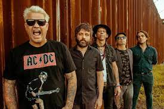

Acústicos & Valvulados é uma banda de rock and roll brasileira formada em 1991 na cidade de Porto Alegre, no Rio Grande do Sul. A banda é formada atualmente por Rafael Malenotti (vocal), Alexandre Móica (guitarra), Paulo James (bateria), Diego Lopes (baixo) e Daniel Mossmann (guitarra).
Com mais de 30 anos de carreira e quase 6 milhões de visualizações em seu canal do Youtube, tem como principais sucessos Fim de tarde com você, O nome dessa rua, Remédio e Até a hora de parar.
